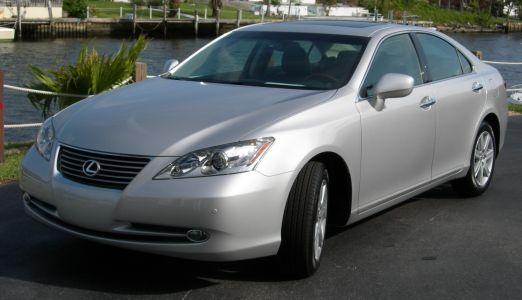
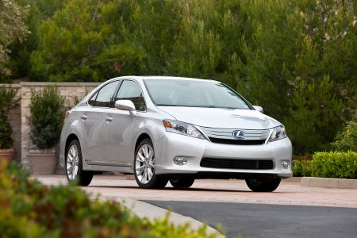
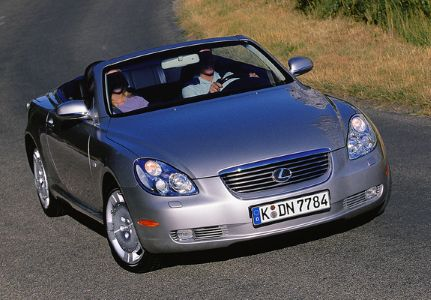

The Worst Lexus Cars
Ever since the release of the LS400, Lexus has been on a track record of greatness with their catchphrase
being “The relentless pursuit of pursuit of perfection”. Though, they are only human and can make some
few missteps with their car manufacturing. These vehicles are criticized for performance, design flaws,
and/or poor value compared to other Lexus vehicles.
Why are these cars the WORST?
Let's find out for ourselves!
- ES 350

Back then in 2007 this looked like a very fancy toyota. Today..not so much. But despite
the perception of its looks, there were actual serious complaints about the bad
manufacturing of ES 350. Unintended acceleration was the biggest thing because the floor
mats had a potential to trap the gas pedal. This caused a huge recall and damaged
the Lexus’ reputation of safety at the time. The other complaints were transmission
hesitation, quick wearing leather seats, and plastics. The driving overall was very
soft. This is because of the suspension. The steering felt disconnected and gave
drivers less confidence behind the wheel. This car was discontinued in 2008.
- HS 250h

The 2010 Lexus HS 250h is the first dedicated hybrid sedan. Unfortunately, people did
not like this. It’s an underpowered hybrid. The setup of 187 hp couldn’t keep up
with the weight of the car, the fuel economy was disappointing for a hybrid, and
the car had awkward proportions. This stands out because it was marketed as eco-luxury
but it fell short on performance and luxury. On the luxury side of things, the
batteries intruded into the trunk so there wasn’t a lot of cargo space. The interior
design felt less premium and had outdated infotainment at launch. This sedan was
discontinued in 2012 because of poor sales.
- SC 430

The proportions of this vehicle were equally as awkward as the HS 250h. The
interior was indeed luxurious, but the tech age was poor. The issues in the
manufacturing side was that the performance didn’t match looks or price. It had a
very powerful 4.3L V8 but the car was super heavy weighing over 4,000lbs so it felt
very sluggish. The soft suspension and vague steering made it feel like a boat instead
of a supercar. There was no feedback through the steering wheel or chassis making
the driver bored because of no engagement. This car had a huge cultural backlash
behind it as well. It was torn to shreds by critics like Jeremy Clarkson. He said
on “Top Gear” that it was “the worst car in the world”. It became known as a luxury
car that focused on looks more than performance. This car started manufacturing in
2001 and discontinued by 2005.